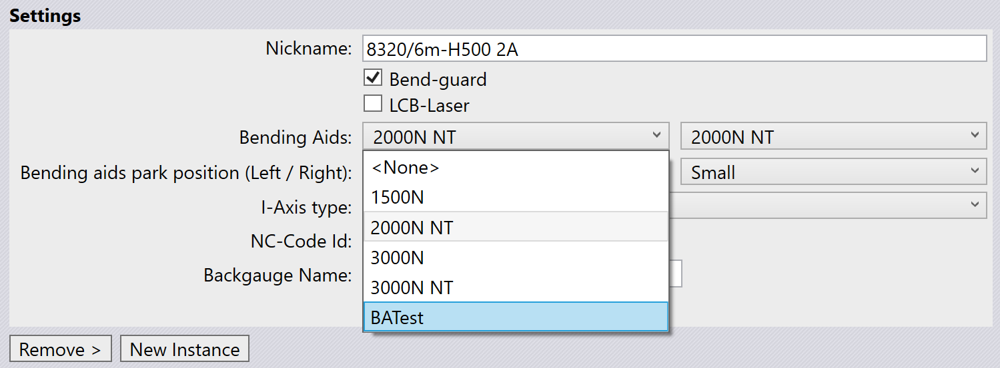

Hajlítási segédeszközök
A hajlítási segédeszközök présfék gépkomponensek, amelyek segítenek a vastagabb fémlemezek hajlításában. Úgy vannak tervezve, hogy további támogatást és vezérlést biztosítsanak a hajlítási folyamat során, pontos és konzisztens eredményeket biztosítva.
Egy présfék több hajlítási segédeszközzel vagy egyetlen hajlítási segédeszközzel is felszerelhető, a hajlítási művelet konkrét követelményeitől függően.
| A hajlítási segédeszközök csak a TruBend 5000 és 8000 sorozatokra alkalmazhatók. |

Hajlítási segédeszközök konfigurálása
A hajlítási segédeszközök a Database / Machines / Settings menüben konfigurálhatók.

Amikor egy alkatrészt importálunk és egy hajlítási segédeszközökkel felszerelt gépet választunk, a TecZone Bend automatikusan konfigurálja a hajlítási segédeszközöket az alkatrész követelményei alapján.
Hajlítási segédeszközök használata
Amint egy megvalósítható hajlítási megoldás létrejött, a hajlítási segédeszközök tovább finomíthatók a hajlítási folyamat optimalizálása érdekében.
Kattintson közvetlenül a hajlítási segédeszközre a TecZone Bend-ban a Bend Aid panel megnyitásához. A Bend Aid panelen található szám a hajlítási szekvenciát jelöli.
![][Hajlítási segédeszköz panel](img/bendaidpanel.png)
-
Index - A jelenleg kiválasztott hajlítási segédeszközt jelöli.
-
Position (Z,R) - A hajlítási segédeszköz pozíciójának beállítására szolgál a Z és R tengelyek mentén.
-
Enabled - Jelölje be ezt a jelölőnégyzetet a hajlítási segédeszköz aktiválásához.
-
Auto-Place - A hajlítási segédeszköz automatikus pozicionálására szolgál az alkatrész geometriája alapján.
Speed:
-
Down - A hajlítási segédeszköz visszahúzási sebességének beállítására szolgál a hajlítási művelet után.
-
Set All Bends - Az aktuális sebességbeállítás alkalmazására szolgál a szekvencia összes hajlítására.
Advanced:
-
Method - A hajlítási segédeszköz működési módjának meghatározására szolgál. Opciók:
-
Default - A hajlítási segédeszköz beállításainak visszaállítása az alapértelmezett értékekre.
-
Return at UDP - A hajlítási segédeszköz beállítása felhasználó által meghatározott pozícióba való visszatérésre minden hajlítás után.
-
Tilt product - Lehetővé teszi a hajlítási segédeszköznek, hogy billentse az alkatrészt a hajlítási folyamat során a jobb illeszkedés érdekében.
-
Static angle - Lehetővé teszi egy fix szög beállítását a hajlítási segédeszköz működése során.
-
-
Stop angle - A szög beállítására szolgál, amelynél a hajlítási segédeszköz megáll a művelet során.
Hajlítási segédeszközök parkoló pozíciója
A hajlítási segédeszközök kijelölt pozícióban parkolhatók, amikor nincsenek használatban. Ez segít optimalizálni a munkaterületet és biztosítja a biztonságot a működés során. Ez szintén megakadályozza az ütközéseket más gépkomponensekkel.
A hajlítási segédeszközök a következő pozíciókban parkolhatók:
-
Default - A hajlítási segédeszközök az asztal hosszáig parkolhatók.
-
Small - A hajlítási segédeszközök 700 mm-rel túl helyezhetők az asztal hosszán.
-
Large - A hajlítási segédeszközök 1200 mm-rel túl helyezhetők az asztal hosszán.

Tandem gépeknél négy hajlítási segédeszköz áll rendelkezésre. Bal tandem gépeknél csak bal oldali parkolás engedélyezett. Jobb tandem gépeknél csak jobb oldali parkolás engedélyezett.
|
A parkoló pozíció opció csak a TruBend 8000 sorozat és VarioPress gépek esetén jelenik meg. B36 tandem gépeknél a small parkoló pozíció nem alkalmazható. |
Egyéni hajlítási segédeszközök létrehozása
Ahhoz, hogy egyéni hajlítási segédeszközöket hozzunk létre a TecZone Bend-ban, először létre kell hozni egy ini fájlt, amely meghatározza a hajlítási segédeszköz paramétereit, és mesh fájlokat a hajlítási segédeszköz komponensei számára (Carriage, Table és Plate).
[BAData]
; A felhasználó által megadott BendAid név. Csak egyéni hajlítási segédeszközökhöz használt
Name=BATest
; A V-szélességek tartománya, amelyet a hajlítási segédeszköz támogatni tud
DieV=16,250
; A szerszám-magasságok tartománya, amelyet a hajlítási segédeszköz támogatni tud
DieHeight=-30,250
; Maximális szög, fokban
MaxAngle=55
; Emelési kapacitás, kg-ban
Payload=300
; Maximális emelési sebesség, fok/másodpercben
Speed=45
; Amikor a hajlítási segédeszköz X=0-nál van, ez a támasztó asztal határa felülnézetben
Table=-159,-1032,159,-245.6
; A hajlítási segédeszköz X-tartománya (amikor 0 pozícióban van)
XExtent=-213,213
; Megmondja, hogy a felhasználó megváltoztathatja-e az előremenet sebességét
CanChangeForwardSpeed=False
; Megmondja, hogy a biztonsági megállási szög lehetséges-e a gépben
CanStopAtReturn=True
; A hajlítási segédeszköz mozgása különböző módszerekkel variálható-e?
AdvancedControl=True
; Milyen típusú meglévő hajlítási segédeszközhöz rendelhető ez? Csak egyéni hajlítási segédeszközökhöz használt
EType=TB8000_2000N_B36
[Carriage]
Model=Carriage.mesh
Stroke=-1000,1000
Color=White
Shift=0,0,100
[Table]
Model=Table.Mesh
Stroke=50,200
Color=White
[Plate]
Model=Plate.mesh
Stroke=0,56
Color=#4A4A4AHelyezze az ini fájlt és a megfelelő mesh fájlokat egy mappába, amely aztán importálható a TecZone Bend-ba.
Egyéni hajlítási segédeszközök importálása
Egyéni hajlítási segédeszközök importálásához:
-
Navigáljon a File / Import / Bending Aids… menüponthoz és válassza ki a már létrehozott ini fájlt (győződjön meg róla, hogy a megfelelő mesh fájlok ugyanabban a mappában vannak).
-
Az importált hajlítási segédeszközök ezután elérhetők lesznek a hajlítási segédeszköz kiválasztás legördülő menüjében a gépbeállításokban.

Ez az opció akkor hasznos, amikor egy hajlítási segédeszközt személyre kell szabni bizonyos hajlítási feladatokhoz, vagy amikor olyan speciális hajlítási segédeszközöket használnak, amelyek nem szerepelnek az alapértelmezett TecZone Bend adatbázisban.